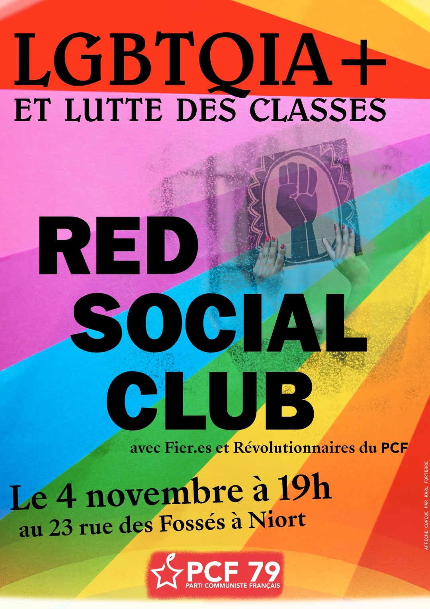

Annonce fédérale
À Niort, le Red Social Club annonce une soirée sur les luttes LGBTQIA+
Date indiquée par Facebook · 31 octobre 2022
Repères éditoriaux
La fédération a annoncé la reprise du Red Social Club le 4 novembre à 19 h, au 23 rue des Fossés, autour des luttes LGBTQIA+ et des rapports de classe.
Texte conservé avec la publication
Red Social Club - Soirée spéciale "LGBTQIA+ et Lutte des classes"
C'est avec grand plaisir que la Fédération des Deux-Sèvres du PCF vous annonce la reprise du Red Social Club animé par notre camarade Francis, le 4 novembre à 19 heures au 23 rue des Fossés.
Soirée spéciale "LGBTQIA+ et Lutte des classes" en présence d'un représentant de la commission "Fièr.es et Révolutionnaires" du PCF. Les membres de cette commission travaillent depuis de nombreuses années à un réel projet politique et révolutionnaire de jours heureux dans le respect de toutes et tous.

Sources
Archive rouge · export Facebook · AR-0002-FB-01823
À lire aussi · Bonne année 2026 de la part du PCF des Deux-Sèvres